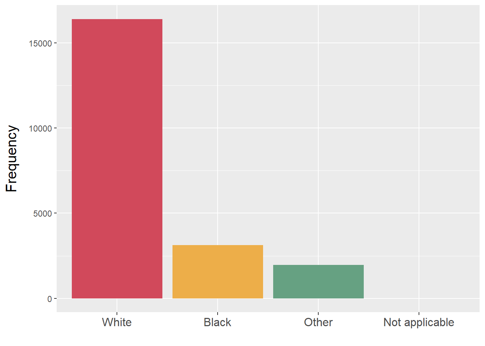
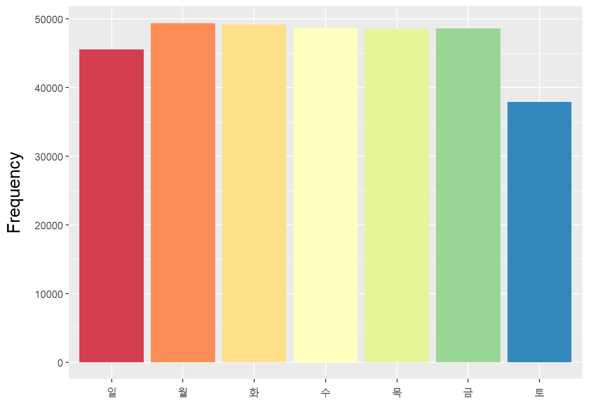
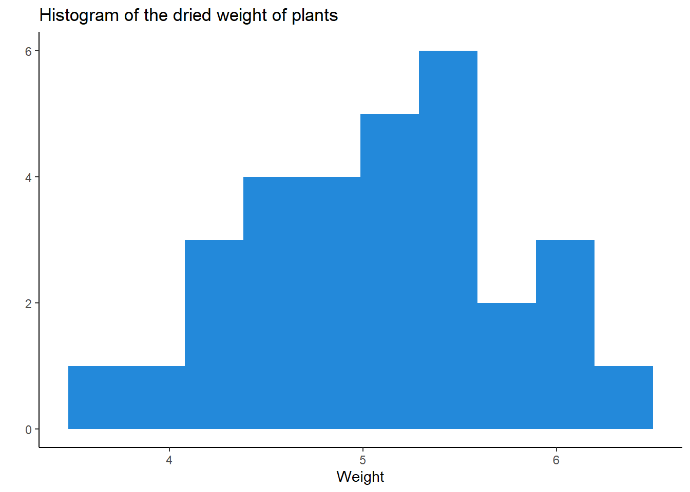
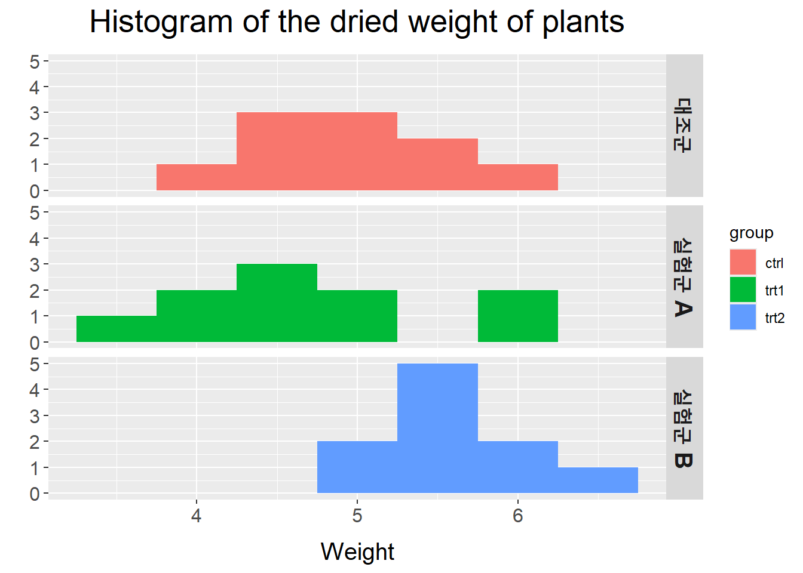
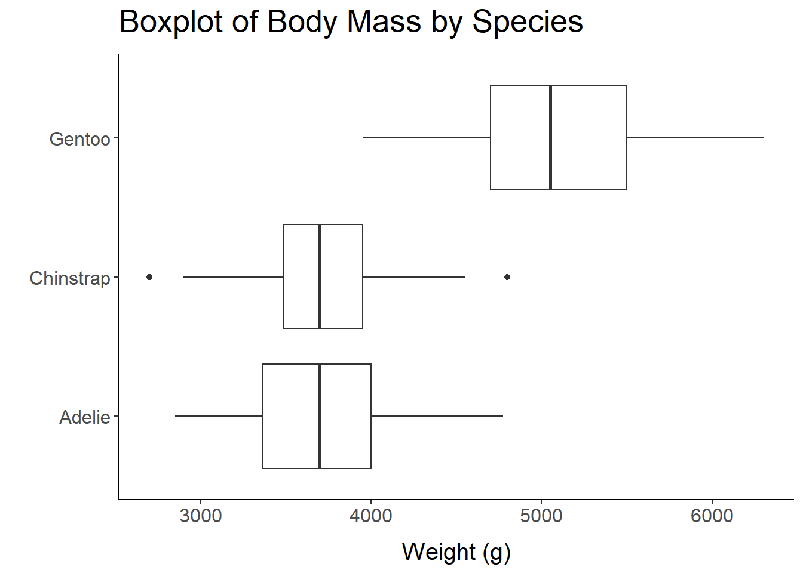
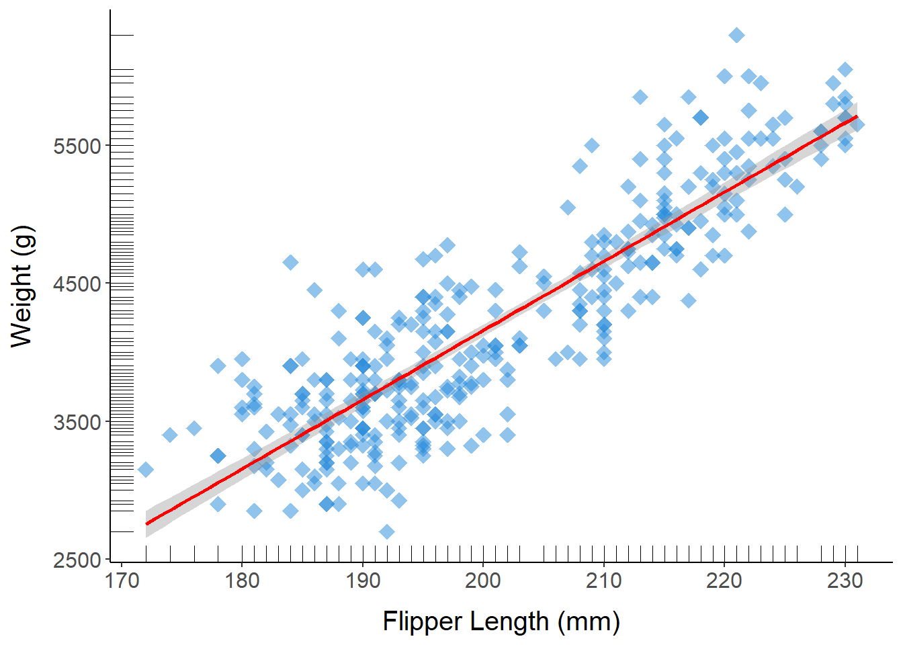
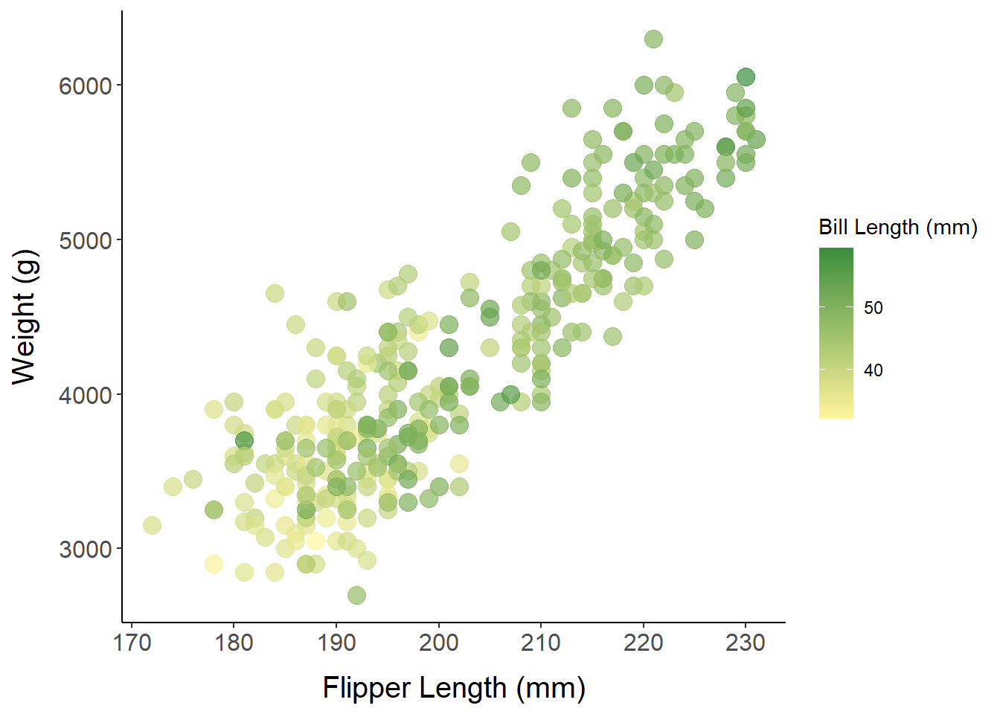
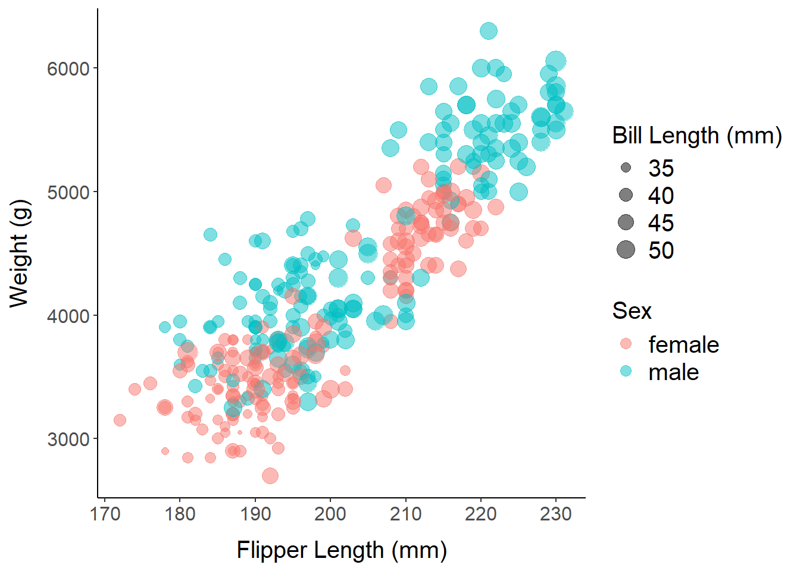
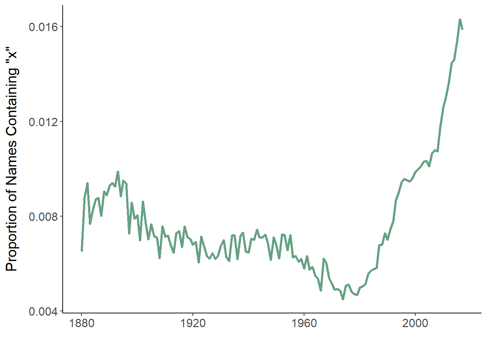
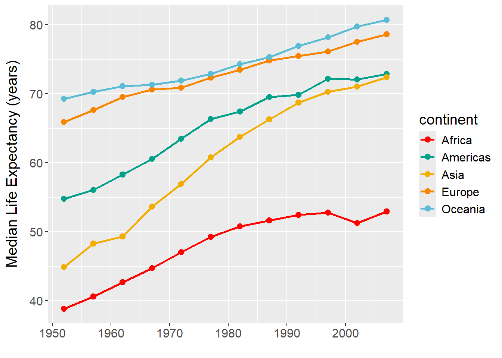

Chapter 7 데이터 시각화
7.1 데이터 시각화 이해
7.1.1 데이터 시각화(data visualization)
- 데이터나 정보를 그래프, 차트 등 시각적 형식으로 표현하는 것
- 시각적 이미지는 보다 직관적인 인식을 가능하게 하고 강렬한 인상을 남김
- 다양한 시각화를 통해 데이터에 대한 다층적인 이해 가능
- 빅데이터를 효과적으로 요약하고 전달할 수 있음
7.1.2 데이터 유형에 따른 시각화 방법
| 유형 | 설명 | 예제 | 시각화 방법 |
|---|---|---|---|
| 범주형 데이터 (categorical data) |
- 집단으로 구분되는 데이터 - 기본적으로 숫자로 표현할 수 없음 - 대소비교, 산술연산 불가능 |
성별, 종교 | - 막대 그래프(bar chart) - 원 그래프(pie chart) |
| 수치형 데이터 (numerical data) |
- 수치 값을 가지는 데이터 - 대소비교, 산술연산 가능 |
키, 몸무게 | - 히스토그램(histogram) - 상자 그림(box plot) - 산점도(scatter plot) - 선 그래프(line plot) |
7.2 R base graphics
- R에 기본적으로 내장되어 있는 데이터 시각화 도구
- 다양한 종류의 그래프 생성이 가능하며, 매개변수를 통해 세부적인 그래픽 요소를 설정할 수 있음
7.3 ggplot2 패키지
7.3.1 ggplot2 패키지 소개
- 범용성, 명료함, 일관성 있는 인터페이스, 미적인 그래픽 결과를 제공하는 패키지
- Leland Wilkinson(2005)이 제한한 그래픽 문법(grammar of graphics)을 구현함
- 현재 R을 활용한 데이터 시각화의 표준으로 자리 잡고 있음
- 독립적인 시각적 구성요소를 정의하고, 이를 층층이 쌓아올리는 방식으로 그래프를 생성
- 원시 데이터를 나타내는 층(layer)를 먼저 정의한 후, 각종 주석이나 통계 객체 등을 추가할 수 있음
- 시각화 과정을 표준화하므로 그래픽 문법에 익숙해지면 다양한 그래프를 자유자재로 그릴 수 있음
- 그래픽 문법의 7가지 요소
| 요소 | 설명 |
|---|---|
| data | 데이터 |
| aesthetics | 시각적 표현 양식(x축, y축, 크기, 색상, 모양 등) |
| geometries | 시각화 그래픽 요소(기하 객체)(점, 선, 막대 등) |
| facets | 화면 분할 |
| statistics | 통계량 |
| coordinates | 좌표계 |
| theme | 그래프 꾸미기 |

7.3.2 ggplot2 기본 구조
- 가장 기본적인 구조는
ggplot()함수와geom_계열 함수로 구성됨 - 각 구성요소는
+로 연결되며, 줄 바꿈 시에는 반드시+는 줄 마지막에 위치해야 함ggplot()함수- 좌표 시스템(빈 그래프)을 생성하며, 이후 레이어를 추가하여 그래프를 완성
- 첫 번째 매개변수는 데이터프레임(data frame)을 지정
geom_계열 함수- ggplot 객체에 다양한 유형의 레이어를 추가
- 범주형 데이터 시각화 -
geom_bar() - 수치형 데이터 시각화 -
geom_histogram(),geom_boxplot(),geom_point(),geom_line()
ggplot(data = <DATA>) + <GEOM_FUNCTION>(mapping = aes(<MAPPINGS>))7.3.3 막대 그래프(bar chart)
- 범주형 데이터를 시각화한 것으로, 집단별 빈도를 막대로 나타낸 그래프
- [예제] 다이아몬드 가격 데이터셋 diamonds
- cut : 컷 품질(Fair, Good, Very Good, Premium, Ideal)
- color : 다이아몬드 색상(from D(best) to J(worst))
- clarity : 다이아몬드 투명도(I1(worst), SI2, SI1, VS2, VS1, VVS2, VVS1, IF(best))
library(ggplot2)
## Example 1
# 컷 품질에 대한 막대 그래프
ggplot(diamonds, aes(x = cut)) + geom_bar()
ggplot(diamonds, aes(x = cut)) + geom_bar(fill ="orange")
ggplot(diamonds, aes(x = cut, fill = cut)) + geom_bar()
## Example 2
# 컷 품질, 다이아몬드 투명도에 대한 막대 그래프
p <- ggplot(diamonds, aes(x = cut, fill = clarity))
p + geom_bar() # 누적 막대 그래프
p + geom_bar(position="fill") # 100% 누적 막대 그래프
p + geom_bar(position="dodge")
p + geom_bar(position="identity", alpha = 0.2)## Example 3
# 인종의 빈도가 큰 순서대로 시각화
library(forcats)
library(dplyr)
gss_cat %>%
mutate(race = fct_infreq(race)) %>% # 각 수준의 빈도가 큰 순서대로 재정렬
ggplot(aes(race, fill = race)) +
geom_bar() +
scale_x_discrete(drop = FALSE) + # 관측값이 없는 수준(levels)도 표시
scale_fill_manual(values = c("#d1495b", "#edae49", "#66a182", "#2389da")) +
labs(x = "", y = "Frequency") +
theme(axis.title.y = element_text(size = 15, margin = margin(r=10)),
axis.text.x = element_text(size = 12),
legend.position = "none")
## Example 4
# 항공편 출발 요일의 분포 시각화
library(lubridate)
library(nycflights13)
# 예정된 도착 일시, 실제 출발 일시, 실제 도착 일시를 date-time 형식으로 생성
make_datetime_100 <- function(year, month, day, time) {
make_datetime(year, month, day, time %/% 100, time %% 100)
}
flights_dt <- flights %>%
filter(!is.na(dep_time), !is.na(arr_time)) %>%
mutate(dep_time = make_datetime_100(year, month, day, dep_time),
arr_time = make_datetime_100(year, month, day, arr_time),
sched_dep_time = make_datetime_100(year, month, day, sched_dep_time),
sched_arr_time = make_datetime_100(year, month, day, sched_arr_time)) %>%
select(origin, dest, ends_with("delay"), ends_with("time"))
# 시각화
library(RColorBrewer)
flights_dt %>%
mutate(wday = wday(dep_time, label = TRUE)) %>%
ggplot(aes(x = wday, fill = wday)) +
geom_bar() +
scale_fill_manual(values = brewer.pal(7, "Spectral")) +
labs(x = "", y = "Frequency") +
theme(legend.position = "none") +
theme(axis.title.y = element_text(size = 15, margin = margin(r=10)),
axis.text.x = element_text(size = 12),
legend.position = "none")
7.3.4 히스토그램(histogram)
- 수치형 데이터를 일정 구간으로 나눈 후, 각 구간별 빈도를 막대로 나타낸 그래프
- [예제] 식물 성장 실험 데이터셋 PlantGrowth
- weight : 식물의 건조 중량
- group : 처리 집단(ctrl, trt1, trt2)
## Example 1
# 건조 중량에 대한 히스토그램
ggplot(PlantGrowth, aes(x = weight)) +
geom_histogram(fill = "#2389da", bins=10) +
labs(title="Histogram of the dried weight of plants", x = "Weight", y ="") +
theme_classic()
## Example 2
# 처리 집단에 따른 건조 중량의 분포 비교
labels <- c("ctrl" = "대조군", "trt1" = "실험군 A", "trt2" = "실험군 B")
ggplot(PlantGrowth, aes(x = weight, fill = group)) +
geom_histogram(binwidth = 0.5) +
labs(title="Histogram of the dried weight of plants", x = "Weight", y ="") +
facet_grid(group ~ ., labeller = labeller(group = labels)) +
theme(plot.title = element_text(size = 20, margin = margin(b=10), hjust = 0.5),
axis.title.x = element_text(size = 15, margin = margin(t=10)),
axis.text = element_text(size = 12),
strip.text = element_text(size = 15, face="bold"))
7.3.5 상자 그림(box plot)
- 다섯숫자 요약값(five number summary)에 기반으로 한 그래프
- 사분위수(quantile) - 데이터를 크기 순으로 정렬한 후, 사등분하는 값
- 최소값
- 1사분위수(Q1) : 관측값의 25% 순서에 있는 값
- 중앙값(median) : 관측값의 50% 순서에 있는 값
- 3사분위수(Q3) : 관측값의 75% 순서에 있는 값
- 최대값
- 사분위수범위(IQR) = Q3 - Q1
- 사분위수(quantile) - 데이터를 크기 순으로 정렬한 후, 사등분하는 값
- 일반 범위 (Q1 - 1.5*IQR, Q3 + 1.5*IQR)를 벗어난 경우를 이상치(outlier)로 판단
- 집단별 수치형 데이터의 분포를 비교하는데 유용

- [예제] 펭귄 데이터셋 penguins
- species : 품종(Adelie, Gentoo, Chinstrap)
- island : 서식지(Biscoe, Dream, Torgersen)
- body_mass_g : 체중(g)
- sex : 성별(male, female)
##
## Attaching package: 'palmerpenguins'## The following objects are masked from 'package:datasets':
##
## penguins, penguins_rawpenguins %>%
drop_na() %>%
ggplot(aes(x = factor(species), y = body_mass_g)) +
geom_boxplot() +
coord_flip() +
labs(title="Boxplot of Body Mass by Species", x = "", y ="Weight (g)") +
theme_classic() +
theme(plot.title = element_text(size = 20, margin = margin(b=10)),
axis.title.x = element_text(size = 15, margin = margin(t=10)),
axis.text = element_text(size = 12))
## Example 2
# 서식지, 품종, 성별에 따른 체중 분포 비교
pg <- penguins %>%
drop_na() %>%
ggplot(aes(x = island, y = body_mass_g)) +
geom_boxplot() +
facet_grid(sex ~ species) +
labs(x = "", y ="Weight (g)") +
theme_bw() +
theme(axis.title.y = element_text(size = 15, margin = margin(r=10)),
axis.text = element_text(size = 12),
strip.text = element_text(size = 15, face="bold"),
legend.position = "none",
panel.grid.major.x = element_blank(),
panel.grid.minor = element_blank())
#pg + geom_point(color = "#2389da", alpha = 0.5)
pg + geom_jitter(color = "#2389da", alpha = 0.5, width=0.2)
7.3.6 산점도(scatter plot)
- 두 수치형 데이터의 관측 순서쌍을 이차원 평면 상에 점(point)으로 나타낸 그래프
- 한 변수의 변화에 따른 다른 변수의 변화(trend)를 파악하는데 용이
pch- 점(point) 유형- 0~14 : 채우기 없음, 테두리 색상만
color로 설정 - 15~20 : 채우기 색상만
color로 설정, 테두리 없음 - 21~24 : 채우기 색상은
fill, 테두리 색상은color로 설정
- 0~14 : 채우기 없음, 테두리 색상만

- [예제] 펭귄 데이터셋 penguins
- species : 품종(Adelie, Gentoo, Chinstrap)
- island : 서식지(Biscoe, Dream, Torgersen)
- bill_length_mm : 부리 길이(mm)
- flipper_length_mm : 지느러미 길이(mm)
- body_mass_g : 체중(g)
- sex : 성별(male, female)
## Example 1
# 지느러미 길이와 체중에 대한 산점도 및 회귀선
penguins %>%
drop_na() %>%
ggplot(aes(x = flipper_length_mm, y = body_mass_g)) +
geom_point(size = 4, color = "#2389da", alpha = 0.5, pch = 18) +
geom_rug(size = 0.2) + # 러그(작은 선)
geom_smooth(method = lm, color = "red") + # 회귀선
labs(x = "Flipper Length (mm)", y = "Weight (g)") +
theme_classic() +
theme(axis.title.x = element_text(size = 15, margin = margin(t=10)),
axis.title.y = element_text(size = 15, margin = margin(r=10)),
axis.text = element_text(size = 12))## Warning: Using `size` aesthetic for lines was deprecated in ggplot2 3.4.0.
## ℹ Please use `linewidth` instead.
## This warning is displayed once every 8 hours.
## Call `lifecycle::last_lifecycle_warnings()` to see where this warning was
## generated.## `geom_smooth()` using formula = 'y ~ x'
## Example 2
# 지느러미 길이와 체중에 대한 산점도 + 부리 길이(색상)
penguins %>%
drop_na() %>%
ggplot(aes(x = flipper_length_mm, y = body_mass_g)) +
geom_point(aes(color = bill_length_mm), size = 4, alpha = 0.7, pch = 19) +
scale_color_gradient(low = "#FFF59D", high = "#388E3C") +
labs(x = "Flipper Length (mm)", y = "Weight (g)", color = "Bill Length (mm)") +
theme_classic() +
theme(axis.title.x = element_text(size = 15, margin = margin(t=10)),
axis.title.y = element_text(size = 15, margin = margin(r=10)),
axis.text = element_text(size = 12))
## Example 3
# 지느러미 길이와 체중에 대한 산점도 + 부리 길이(크기), 성별(색상)
penguins %>%
drop_na() %>%
ggplot(aes(x = flipper_length_mm, y = body_mass_g)) +
geom_point(aes(color = sex, size = bill_length_mm), alpha = 0.5) +
labs(x = "Flipper Length (mm)", y = "Weight (g)", color = "Sex", size = "Bill Length (mm)") +
theme_classic() +
theme(axis.title.x = element_text(size = 15, margin = margin(t=10)),
axis.title.y = element_text(size = 15, margin = margin(r=10)),
axis.text = element_text(size = 12),
legend.title = element_text(size = 15),
legend.text = element_text(size = 15)) +
guides(color = guide_legend(override.aes = list(size = 3))) +
scale_size_continuous(breaks = c(35, 40, 45, 50))
7.3.7 선 그래프(line plot)
- 한 변수의 변화에 따른 다른 변수의 변화를 선(line)으로 연결하여 나타낸 그래프
- 일반적으로 x축에는 시계열 데이터가 자주 사용됨
- 범주형 데이터 : 순서가 있는 경우에만 표현 가능
- 연속형 데이터 : 몇 개의 이산적인 값으로 표현되는 경우가 많음
## Example 1
# 시간에 따른 이름에 "x"가 포함되는 아기의 비율 변화
library(babynames)
babynames %>%
group_by(year) %>%
summarise(prop_x = mean(str_detect(name, "x"))) %>%
ggplot(aes(year, prop_x)) +
geom_line(size = 1.2, color = "#66a182") +
labs(x = "", y = "Proportion of Names Containing \"x\"") +
theme_classic() +
theme(axis.title.y = element_text(size = 15, margin = margin(r=10)),
axis.text = element_text(size = 12))
- [예제] 국가별 사회·경제지표 시계열 데이터셋 gapminder
- continent : 대륙 이름
- year : 연도(1952 ~ 2007년, 5년 단위)
- lifeExp : 기대 수명
## Example 2
# 시간에 따른 대륙별 기대 수명의 중앙값 변화
library(gapminder)
library(wesanderson)
gapminder %>%
group_by(continent, year) %>%
summarise(lifeExp = median(lifeExp)) %>%
ggplot(aes(x = year, y = lifeExp, color = continent)) +
geom_line(size = 1) +
geom_point(size = 2.5) +
labs(x = "", y = "Median Life Expectancy (years)") +
theme(axis.title.y = element_text(size = 15, margin = margin(r=10)),
axis.text = element_text(size = 12),
legend.title = element_text(size = 15),
legend.text = element_text(size = 12)) +
#scale_color_brewer(palette = "Set1")
scale_color_manual(values = wes_palette("Darjeeling1"))## `summarise()` has grouped output by 'continent'. You can override using the
## `.groups` argument.